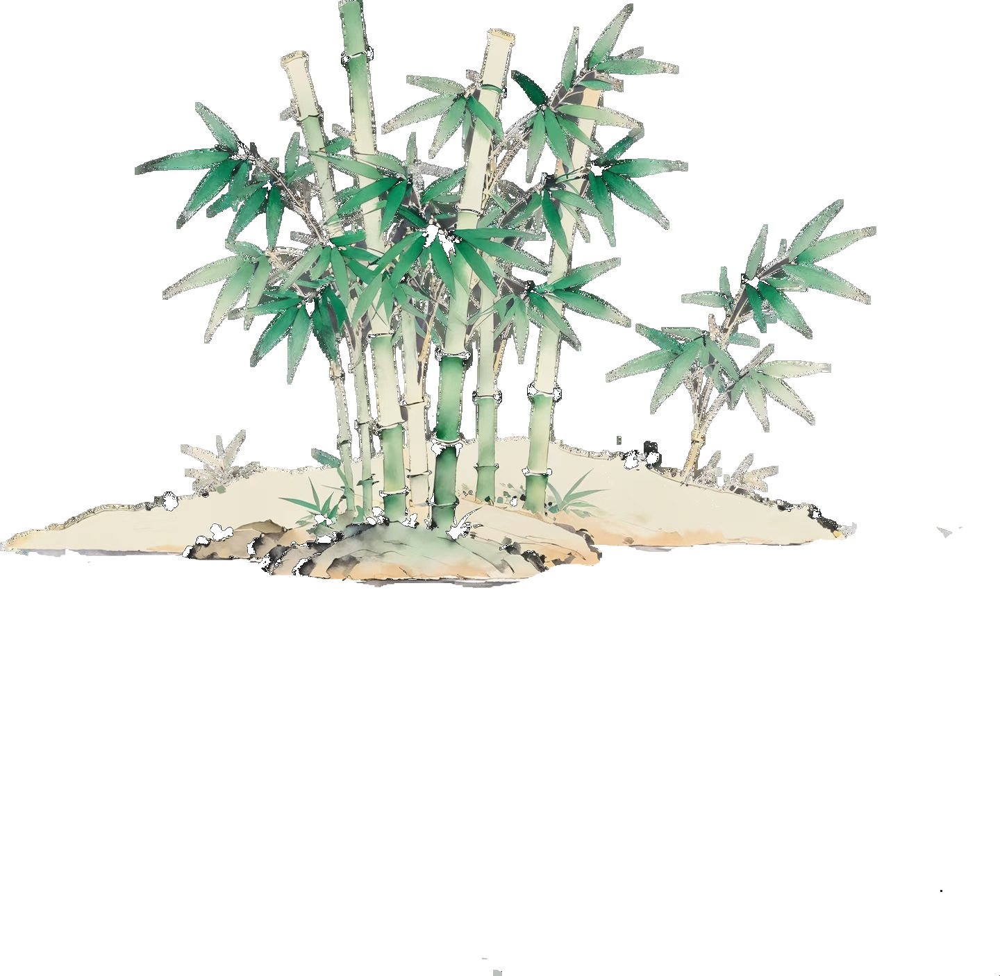
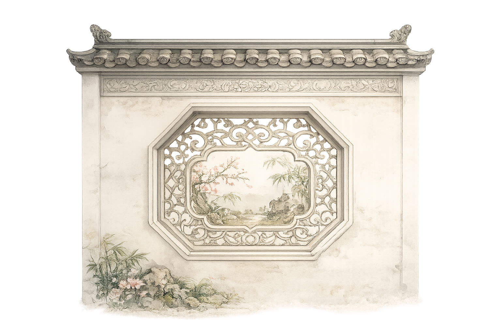
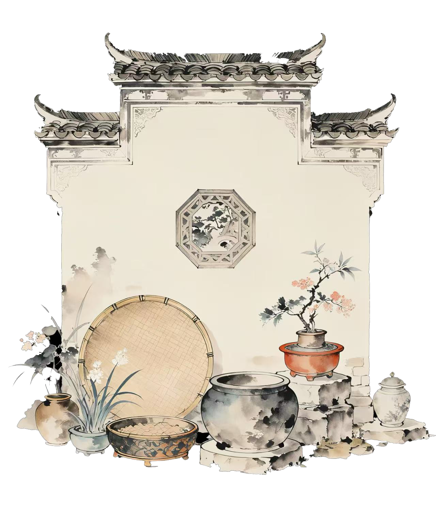
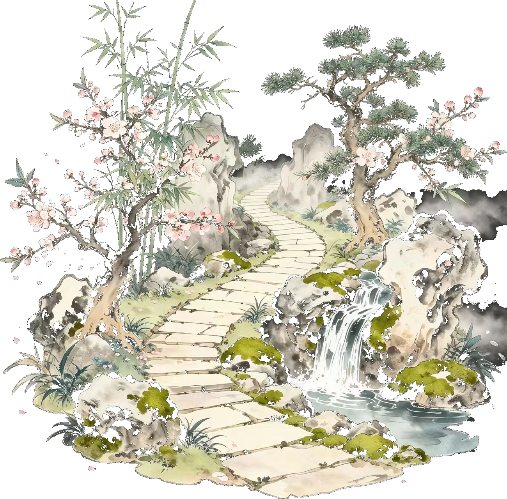
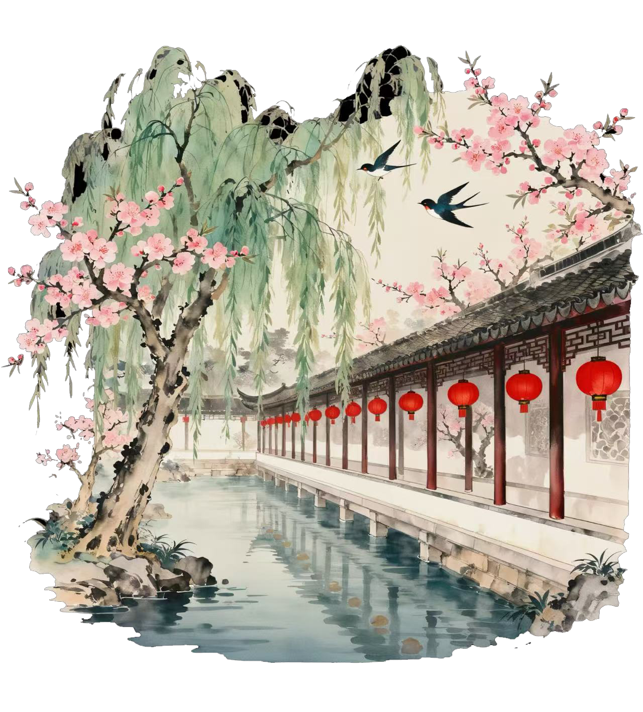
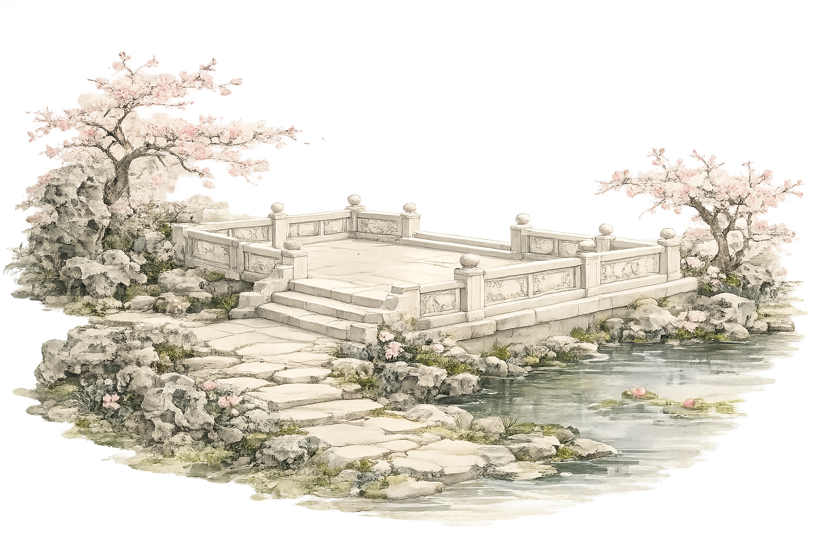

01 How We Began
The starting point of ICII 2026 was a reverse question that NAU-CHINA asked about its own project: if CellApp can organize multiple bounded, membraneless, dynamically reversible functional compartments within a single cell, can a cross-team platform also retain differences while allowing knowledge to gather, exchange, and recombine more effectively?
Starting from this question, we continued ICII's tradition of narrating synthetic biology through Chinese culture, chose the Chinese garden as this year's core imagery, and translated the spatial methods of "separated yet connected, changing scenery with each step, and borrowed scenery across views" into a mechanism for team collaboration.

02 Sending the Garden Invitation · Team Recruitment
We sent invitations to iGEM teams at home and abroad, introducing ICII's long-term positioning, 2026 theme, material specifications, and collaboration requirements.
Each team not only submitted a project and cultural story, but also proposed an open question they hoped to discuss with others. All images and works had to be original, authorized, or compliant with the relevant license, with sources and scope of use noted.

03 Distinguishing Scenes · Material Collection
We collected project presentation materials from each team, focusing both on the technical and research content of the projects themselves and on uncovering expressions that could be combined with cultural imagery behind the projects.
We provided each team with a dedicated showcase platform, guiding the public to understand the topic from a cultural perspective, see the intrinsic connection between scientific issues and culture, and complete the preliminary sorting of Borrowed Scenery Card materials.

04 From Windows to Corridors · Team Matching
We organized team tags based on project field, technical direction, collaboration needs, shared social issues, and complementarity of capabilities.
During the matching process, we focused both on methods that could be directly shared and consciously connected teams with different application scenarios but similar system logic, so that "borrowed scenery" could bring new perspectives for viewing and understanding.

05 Opening the Garden · Launch and Public Feedback
After the website launched, the garden scenery, collaboration connections, and the CellApp interactive courtyard opened to the public together. Some content was also transformed into garden window-style display boards for campus, middle school, and community events.
Online messages and offline feedback flowed into the Echo Pavilion, helping the team continue to respond to questions and optimize the platform.

06 The Garden Never Ends · Impact and Continuation
We will evaluate the project's impact in terms of participating teams and geographic coverage, matching completion rate, number of Borrowed Scenery Cards and joint outcomes, adoption of suggestions, public feedback, and intentions for follow-up collaboration.
More importantly, we hope to preserve a garden framework that can continue to expand: new teams can enter, old connections can extend, and questions once raised can receive new answers in the future.